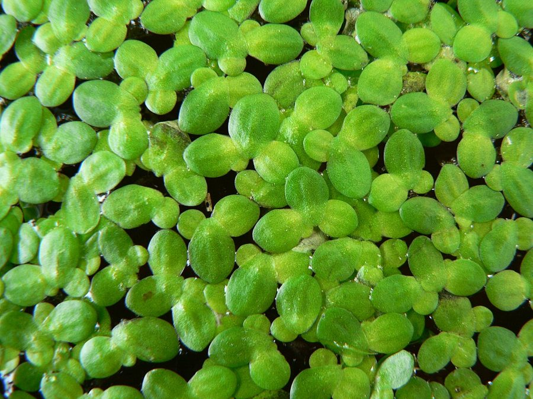

जल-मसूरCommon Duckweed
Lemna minor · Araceae · FLR-0091

- Scientific name
- Lemna minor L.
- Family
- Araceae
- Hindi
- जल-मसूर
- Status here
- native
- IUCN
- not evaluated
When to look कब देखें
Present all year.
जल-मसूर / Common Duckweed
Lemna minor L. — Araceae
जल-मसूर (डकवीड / लेसर डकवीड / कॉमन डकवीड) — पूर्वी उत्तर प्रदेश के स्थिर पानी वाले तालाबों (still ponds), नहरों के किनारे के शांत गड्ढों, और धान के खेतों की जलभराव वाली ज़मीन पर पाया जाने वाला एक अत्यंत छोटा, तैरने वाला जलीय पौधा है। यह दुनिया का सबसे छोटा फूल देने वाला पौधा (smallest flowering plant in the world) है। प्रत्येक पौधा वास्तव में एक छोटी, हरी अंडाकार पत्ती जैसी संरचना (frond) का होता है जिसकी लंबाई केवल 1 से 3 मिमी (मसूर की दाल के दाने जैसी) होती है, जिसके कारण इसे स्थानीय स्तर पर 'जल-मसूर' कहा जाता है। इसके पत्तों के नीचे पानी में लटकती हुई केवल एक बाल जैसी जड़ (single hair-like root) होती है। इसके फूल इतने छोटे (सूक्ष्मदर्शीय) होते हैं कि वे बहुत ही दुर्लभ रूप से देखे जा सकते हैं। यह मुख्य रूप से विभाजन (clonal budding) द्वारा प्रजनन करता है और मात्र 24 से 48 घंटे में अपनी संख्या को दोगुना कर सकता है, जिससे पूरे तालाब पर हरी मखमली चादर बिछ जाती है। इसमें प्रचुर मात्रा में प्रोटीन होता है, जिसके कारण इसे मछली पालन में चारे के रूप में और यूरेशियाई कूट (Common Coot, BRD-0058) व जलमुर्गी (Common Moorhen, BRD-0057) जैसे जलीय पक्षियों द्वारा भोजन के रूप में खाया जाता है।
Quick Identification त्वरित पहचान
| Feature | Description |
|---|---|
| Plant habit | Microscopic, floating aquatic herb; each plant consists of a single leaf-like oval body (frond) measuring 1–3 mm |
| Roots | A single, unbranched, translucent hair-like root hanging vertically (1.0–2.5 cm long) from the underside |
| Reproduction | Primarily vegetative, where new daughter fronds bud off from pockets in the side of the parent plant |
| Flowers | Microscopic, rarely produced, consisting of two male stamens and one female pistil in a tiny cavity |
| Grouping | Floating in massive clusters, often interlinked by 2 or 3 budding plants |
Field tip: Look at a still farm pond in July. Scoop up a hand of the green floating scum. Look closely at your palm; you will see thousands of tiny, separate, bright green oval discs like lentils. Underneath each disc is a single, clear, hanging hair-like root.
Morphology आकारिकी
Biometrics (typical measurements of mature plants in the northern Indian plains):
| Measurement | Range |
|---|---|
| Frond length | 1.0–3.0 mm |
| Frond width | 1.0–2.0 mm |
| Root length | 1.0–2.5 cm |
| Doubling time | 24–48 hours |
| Protein content (dry) | 35–45 % |
| Starch content (dry) | 15–20 % |
Frond Structure: The frond is flat, slightly green-yellow, with 3 faint veins inside. It contains air pockets (aerenchyma) that keep it floating on the water surface.
Roots: The root end is covered in a distinct warty sheath (root cap) which helps stabilize the floating disc in light winds.
Vegetative Budding: New fronds grow from small side pockets (pouches). Once they mature, they split away or stay attached for a few generations.
Associated Species / Interactions संबंधित प्रजातियाँ
- Waterbird Food Web:
- Consumers: A major food resource for Common Coot (Fulica atra) and Common Moorhen (Gallinula chloropus), which skim the pond surface to consume it.
- Pond ecology: The dense mats shade the water, reducing sunlight and slowing down algae growth, though complete coverage can cause low oxygen levels for fish.
Pests and Diseases कीट और रोग
- Duckweed Weevil: Tanysphyrus lemnae is a tiny beetle that feeds on the green fronds, leaving white feeding scars.
- Duckweed Rot Fungus: Pythium species rot the floating mats during hot, stagnant water weeks.
Traditional and Ethnobotanical Use पारंपरिक और नृवंशवनस्पति उपयोग
- High-Protein Aquaculture Feed: Farmed extensively in village ponds by fish farmers in Basti as a natural, protein-rich feed for grass carp and rohu fish, reducing commercial feed costs.
- Organic Compost Supplement: Harvested in large amounts from stagnant ditches, dried, and added to compost piles to provide nitrogen and minerals for winter vegetable crops.
- Wastewater Purifier (Bioremediation): Used in rural drainage ponds to absorb dissolved phosphates and nitrates from sewage water, cleaning the water before it flows into agricultural canals.
- Domestic Duck Feed: Collected daily from local ponds and fed directly to domestic ducks, improving egg laying rates.
Expected Locally स्थानीय रूप से अपेक्षित
Not a field record. Written from published accounts for eastern Uttar Pradesh. No confirmed local sighting yet — if you have seen it, that is what the atlas needs.
अभी तक स्थानीय पुष्टि नहीं। यह विवरण प्रकाशित स्रोतों से है, किसी अवलोकन से नहीं।
An abundant native plant in still waters throughout the Basti district, regularly observed in the Harraiya, Vikramjot, and Basti blocks. Fish farmers value jal-masur, maintaining small nursery ponds to harvest it daily. During September, almost every stagnant village pool is covered with a bright green velvet blanket of this tiny plant.
Distribution वितरण
Global range: Native to temperate and subtropical zones of Europe, Asia, and North America; now cosmopolitan worldwide.
In India: Widespread in all states in still freshwater bodies.
In Uttar Pradesh: Abundant state-wide, especially in farming districts with stagnant ponds.
In Basti district / eastern UP: Widespread across all farming blocks.
Research Questions शोध प्रश्न
Anyone can investigate these | कोई भी इन प्रश्नों की जाँच कर सकता है
- How many days does a colony of 20 Duckweed plants take to cover a small jar of water completely? — Track and calculate the daily doubling rate (Citizen Science Activity for Kids!).
- Does Duckweed grow faster in pond water compared to tap water? — Compare colony sizes in different water samples.
- Do fish in your local pond prefer feeding on Duckweed over commercial feed pellets? — Observe feeding choices.
- What is the ratio of single fronds to linked budding fronds in a sample collected from a pond in Basti? — Count and analyze budding ratios.
- Does the growth rate of Duckweed increase when a few drops of liquid compost fertilizer are added to the jar? / क्या बर्तन के पानी में लिक्विड जैविक खाद डालने से जल-मसूर की वृद्धि दर बढ़ जाती है? — Conduct growth experiments.
Similar Species मिलती-जुलती प्रजातियाँ
| Species | How to tell apart | comparison |
|---|---|---|
| Water Fern / Azolla (Azolla pinnata) | A branched fern; leaf has scale-like triangular segments, turns brick-red in sun; has multiple roots | एज़ोला — कांटेदार शाकीय बनावट, धूप में लाल |
| Greater Duckweed (Spirodela polyrhiza) | Larger (3-8 mm); frond has multiple roots (not a single root); purplish color underneath | बड़ी जल-मसूर — बड़ा आकार, कई जड़ों का गुच्छा |
| Water Lettuce (Pistia stratiotes) | Much larger (5-20 cm); looks like a floating green cabbage; leaves are thick and velvety | जलकुंभी (छोटी) — बड़ा आकार, मखमली पत्तियां |
Field rule: Microscopic floating green oval leaf-like plant (1–3 mm) with a single hair-like root hanging vertically, reproducing rapidly by side budding, is the Common Duckweed (Jal-masur).
Taxonomy & Classification वर्गीकरण
Original description. Carl Linnaeus described the Common Duckweed as Lemna minor in 1753 in his Species Plantarum (Vol. 2, p. 970). The type locality was listed as Europe (in still waters). The genus name Lemna is the ancient Greek name for a water plant. The specific name minor is Latin for smaller.
Subspecies. Monotypic — no subspecies are currently recognised.
Family and order placement. Placed in the order Alismatales, family Araceae (arum family), subfamily Lemnoideae (formerly treated as a separate family, Lemnaceae).
Phylogenetic notes. Lemna minor belongs to a highly reduced monocot lineage (Lemnoideae) that evolved from large arum-like ancestors (similar to Colocasia), losing leaves and stems to adapt to a simplified floating lifestyle.
IUCN status rationale. Not evaluated (NE) by the IUCN Red List. It has a highly secure, cosmopolitan global population.
Photo Gallery फोटो गैलरी
References संदर्भ
- Linnaeus, C. (1753). Species Plantarum. Laurentii Salvii, Holmiae, Vol. 2, p. 970. [original description]
- Brandis, D. (1906). Indian Trees (covers monocot family keys). Archibald Constable & Co., London.
- Bor, N. L. (1960). The Grasses of Burma, Ceylon, India and Pakistan (covers Poales/Alismatales boundaries). Pergamon Press, Oxford.
- Landolt, E. (1986). The Family of Lemnaceae — A Monographic Study. Veröffentlichungen des Geobotanischen Institutes ETH (the definitive monograph).
- World Flora Online (2024). Lemna minor taxon details.
- GBIF Occurrence Data — Lemna minor, India (2010–2025).
Source file: species/flora/aquatic/duckweed.md